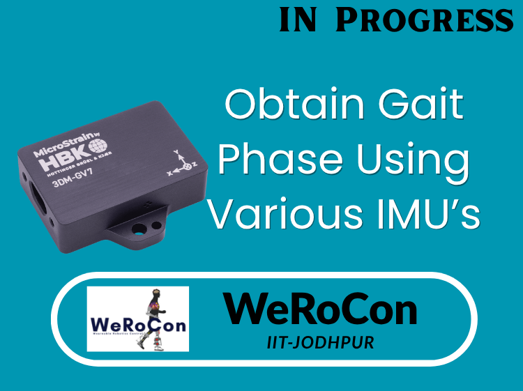

IMU
Inertial measurement unit basics — orientation estimation, sensor fusion and calibration for wearable robotics applications.
Practical notes, hardware guides and teaching resources from our lab's research methods — covering sensing, actuation and mechanical design for wearable robots.

Inertial measurement unit basics — orientation estimation, sensor fusion and calibration for wearable robotics applications.
An introduction to actuator drivers, torque/velocity control loops and real-time control architecture for powered prosthetic leg.
Mechanical design fundamentals for exoskeletons and prosthetic legs — frames, linkages, series elastic elements and fabrication.